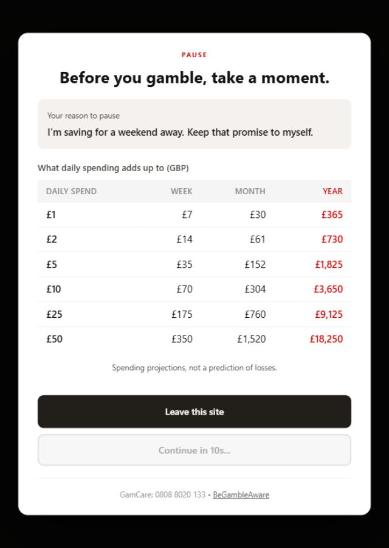

Your reason to pause.
Add a short reminder in your own words. It stays on your device and appears on the pause screen.
A free extension for desktop Chrome
Ten seconds to step back, see what spending adds up to, and decide what comes next.
Free to use. No account. No activity tracking.
A small interruption between opening a betting site and carrying on. You stay in control of the next step.

Available in the Chrome Web Store
BetBanish puts a pause in the path of a familiar habit. Getting started takes just a few steps.
Install from the Chrome Web Store. The default list includes more than 65 gambling domains, with a focus on UK sites.
Open the extension’s Settings to choose which sites show a pause, or add a website of your own.
On a covered site, a spending table appears with a 10-second countdown. You can close the tab, or choose to continue when the countdown ends.
Your sites, your settings
Bet365, William Hill, Paddy Power, Ladbrokes, Betfair and Sky Bet are among the domains included by default. You can add other sites in Settings.
Coverage is based on website addresses. BetBanish works in desktop Chrome, so it does not cover gambling apps or every device you use.
View the full site listComing in the next update
Version 1.2 is being prepared for submission to the Chrome Web Store. These additions are not available in the store release yet.
A sample reminder. A real countdown. No betting site opens.
Add a short reminder in your own words. It stays on your device and appears on the pause screen.
Open Chrome’s New Tab page with one click, even while the countdown is running.
Choose your currency, or use a suggestion from your browser’s regional language settings. No location lookup.
Check whether the current website is covered and add it from the toolbar popup.
Privacy, explained
BetBanish checks website addresses inside your browser. The extension has no accounts, usage analytics or developer-operated servers, and sends no user data to the developer.
Chrome may sync your site settings through your Google account. In the upcoming update, the currency choice also uses Chrome sync, while your personal reminder stays on your device.
Read the privacy policyBefore you install
No. It adds a pause after a covered website loads, and lets you continue after 10 seconds. Continuing dismisses the pause for that website in the same tab session. You can also disable or remove the extension.
BetBanish is a tool for reconsidering a visit. It does not replace self-exclusion, dedicated blocking software or professional support.
The extension needs to check the website address and show its pause on covered pages. Access across websites lets you add your own domains beyond the default list. It does not collect a browsing-history log or send your browsing activity to the developer.
BetBanish is built for desktop Chrome. It does not work in the Chrome mobile app, and it cannot pause activity in gambling apps or other browsers.
They show what a daily spending amount adds up to over a week, month and year. They are examples, not tracked spending, a prediction of losses or a claim about money saved. The current store release uses GBP; currency selection is coming in v1.2.
Yes. After installing, add example.com in the extension’s Settings, then open that address in a fresh tab to see the pause. Remove it from your custom sites afterwards.
This page has no analytics scripts, advertising cookies or feedback forms. It is hosted on GitHub Pages, so GitHub handles web requests under its privacy statement. Links to the store, GitHub and support services open those external websites.
Open an issue on GitHub with the website domain or a description of the problem. GitHub issues are public, so leave out personal reminders and sensitive information.
Add a pause to your next visit.
Free. For desktop Chrome.